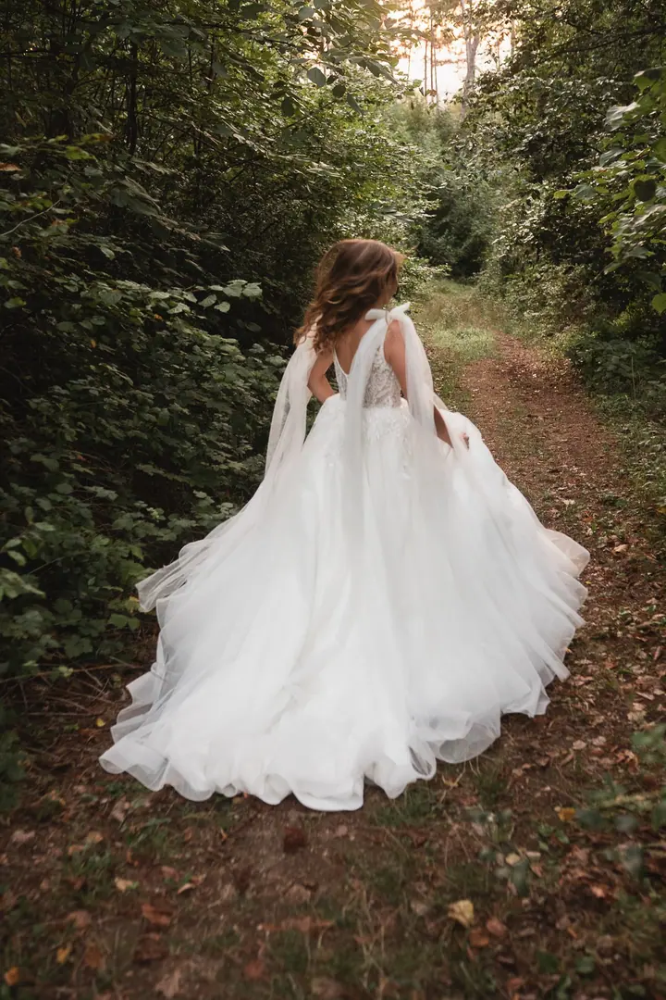
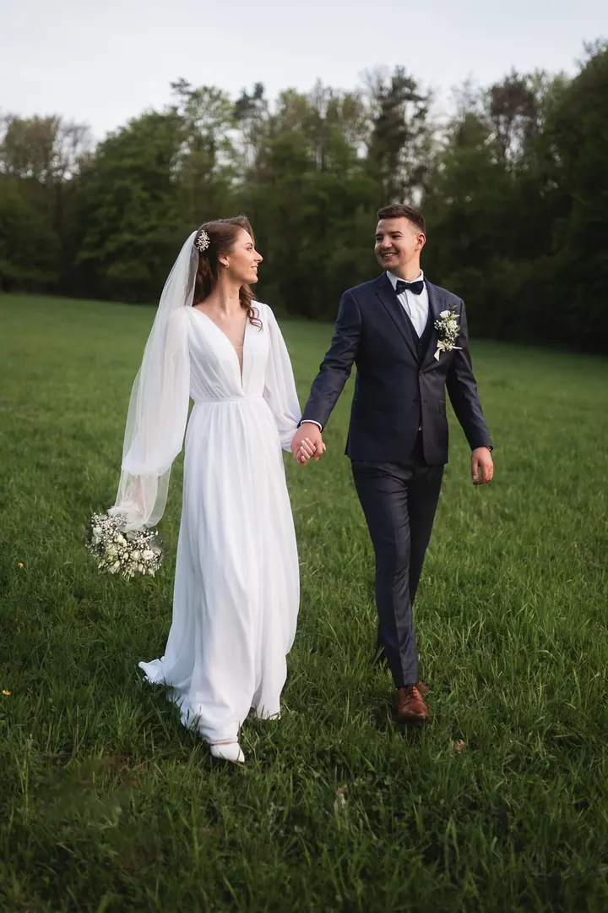

jedna
Svatební focení
Celý váš svatební den vyprávím jako příběh plný radosti, smíchu a lásky. Chci, aby fotky dýchaly životem, barvami a měly v sobě něco skutečného.

Svatební fotograf · Olomouc, Šumperk, Zábřeh

Jmenuji se Milan Kasala a fotím svatby v Olomouckém kraji i kdekoliv jinde, kam mě pozvete. Pocházím ze Slovenska, ale doma jsem u Zábřeha na Moravě. Nejvíc mě baví vyprávět fotkami příběhy plné radosti, smíchu a energie.
Více o mně
Co fotím
jedna
Celý váš svatební den vyprávím jako příběh plný radosti, smíchu a lásky. Chci, aby fotky dýchaly životem, barvami a měly v sobě něco skutečného.
Společné focení pro dva, v přírodě nebo na místě, které máte rádi. Uvolněně a s energií, aby fotky byly hlavně o vás.
Přirozené portréty, na kterých budete sami sebou. Fotím venku i na místech podle vaší domluvy.
Klidné focení pro budoucí rodiče, plné něhy a radosti z toho, co přichází.
Fotky, které dýchají životem a barvami


Za objektivem
Jmenuji se Milan. Pocházím ze Slovenska, ale žiji v České republice u Zábřeha na Moravě. Fotím svatby, páry, portréty i těhotenství, a to na Moravě i na Slovensku.
Nejvíc mě baví vyprávět fotkami příběhy plné radosti, smíchu, lásky a energie. Přesně o to se snažím při každém focení. Chci, aby snímky dýchaly životem, barvami a měly v sobě něco skutečného.
Působím v Olomouckém kraji, tedy v Olomouci, Šumperku, Zábřehu, Mohelnici a dalších místech v okolí. Po domluvě za vámi rád přijedu kamkoliv po celé České republice i do zahraničí.
Milan
Pošlete mi zprávu přes formulář. Napište mi datum svatby, místo obřadu a přibližný počet hostů, ať vím, co plánujete.
Probereme, jak si svůj den představujete, co je pro vás důležité a jaký balíček vám bude sedět.
Jsem s vámi a sleduji, co se kolem děje. Nic nehraji, nechávám prostor smíchu, emocím a skutečným chvílím.
Fotky pečlivě vyberu a upravím tak, aby měly barvy, život a atmosféru vašeho dne. Pak je od mě dostanete online.
Portfolio
Otázky
Hlavně v Olomouckém kraji: Olomouc, Šumperk, Zábřeh, Mohelnice a okolí. Po domluvě přijedu kamkoliv po celé ČR i do zahraničí.
Ano. Pocházím ze Slovenska a fotím tam svatby, páry i portréty, třeba v Trenčíně nebo v Bánovcích nad Bebravou.
Pomůže mi datum svatby, místo svatebního obřadu a přibližný počet hostů. Podle toho vám pošlu nabídku.
Ano. Kromě svateb fotím párová, portrétová a těhotenská focení.